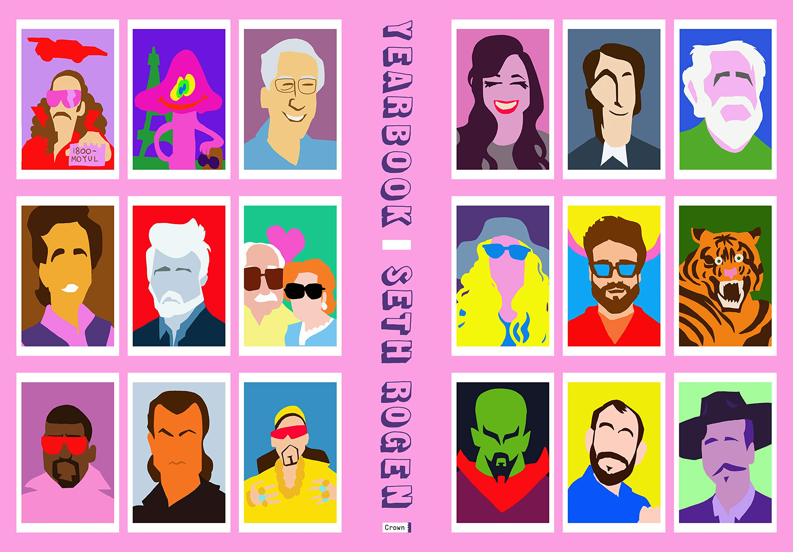
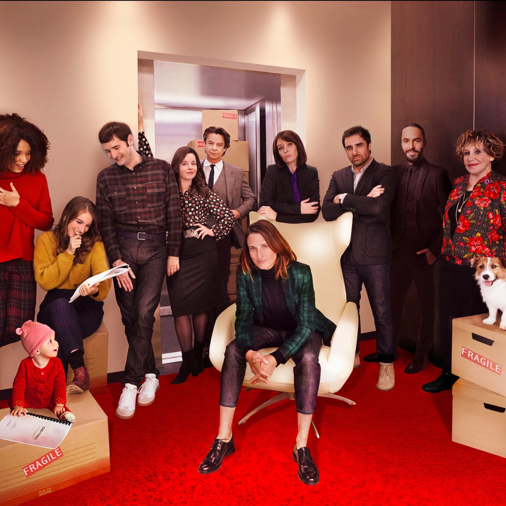

Caroline:
The Vanishing Half, Brit Bennett
Alyssa:
Lifts and Lies, Christine Van Dusen
Jen:
The Last Thing He Told Me,
Laura Dave
Tiana Pigford
marketing associate
Mimi Li
senior editor
Go to Mimi’s pick


If you felt that Jane Eyre was a slog from start to end and that the “mad” and estranged wife of Edward Rochester, Bertha Mason (née Antoinette Cosway), deserved a backstory, you must read Jean Rhys’s novella,
Wide Sargasso Sea. Rhys, who always hated England and English culture, structures her work from the perspective of both Antoinette and Rochester using an overlay of colonialism, race, and perceived female madness—forces that lead Antoinette to that infamous early end in the attic of Thornfield Hall.
My delight lies in the purpose of the backstory provided by Rhys to Antoinette—what I prefer to call a resurrection work. That is, resurrecting a literary, historical, or cultural figure (the more minor, perhaps the better) to retell a history of or rededicate purpose to a figure previously marginalized.
Daniel Mutz
associate managing editor
Go to Daniel’s pick
Justin Durkin
designer
Go to Justin’s pick

The Disney+ original series Loki, created by Michael Waldron (Rick and Morty, Heels, and Doctor Strange in the Multiverse of Madness), follows an alternate version of the title character after the events of Avengers: Endgame. Tom Hiddleston (Loki) and Owen Wilson (Mobius) provide charismatic performances—and a clever juxtaposition as Mobius’s uptight lawfulness pushes order onto the mischievous trickster who can’t scheme and amass power while stuck at the Time Variance Authority (TVA), an organization that monitors the sacred timeline.
Loki borrows themes from Blade Runner and Mad Men, with characters becoming aware of who they really are, all set in front of stunning visuals derived from Brutalist architecture and bureaucratic elements that inspired director Kate Herron (Sex Education). The brilliant score by Natalie Holt (Paddington) perfectly reflects the retro-futurist vibes.
The book Yearbook by Seth Rogan covers, among other things: drugs, North Korea, Amsterdam's Red Light District, and Tom Cruise.
You don't have to think of this book in terms of summer reads or beach reads, but it is great in both categories. That is, if you're OK cackling at the beach or on a blanket in the park.
Allan:
American Pastoral, Philip Roth

It’s the summer to end all summers. Right? With so much to celebrate and enjoy again, I feel like I can’t pack in enough trips to the beach, patio margaritas, runs on the lakeshore, and walks around the neighborhood hunting for bugs—you know, with my toddler. Here’s what else we’ve been enjoying lately and our top picks for summer reading.
With Bastille Day just around the corner, I've been brushing up on my French through podcasts and shows. One of the funniest shows I've been watching is Call My Agent! (Dix Pour Cent!) on Netflix, a French comedy about agents at a top Paris talent agency struggling to keep their celebrity clients happy amid lots of chaos and sticky situations.

Great summer reads

Go to Tiana’s pick
